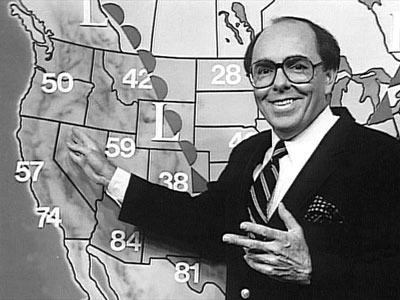
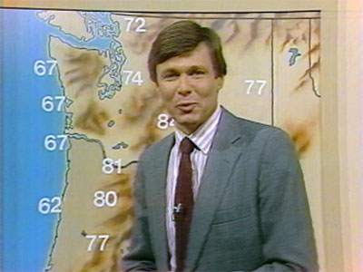
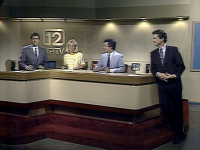

|
|
L O C A L P R O G R A M S |
The 10 O'Clock News 1980-1989


Opening credits of the show, 1980.

Ted
Warren,
anchor
from
1976-1984
was
joined
by
Emerald
Yeh,
1980-1983.

Another
shot
of
Ted
Warren,
same
set,
this
time
sporting
a
mustache.

Ted
Warren
and
other
members
of
the
news
team
also
provided
afternoon
news
updates
for
KPTV,
using
a
smaller
"desk"
set
with
a
blue
KPTV
background.

From
1981:
The
"blue"
background
could
also
be
used
to
"superimpose"
graphics
behind
the
anchor,
as
in
this
story
relating
to
the
airlines.

Reporter John Sears covers the eruption of Mt. St. Helens,
1980. Sears later became news director at KPTV.
The 10 O'Clock News team, 1984-85: David Apple
(weather),
Michael O'Brien (sports), Kim Singer (anchor), Gary Hill (anchor).

Gary Hill and Kim Singer on the new news set, for 1984
election
returns.

David Apple's first term as weatherman was 1983-1985.

Apple was succeeded by Fred Buller, 1985-1986.

Opening credits to the show, 1987.

Hill, Singer, O'Brien and Donovan on the set, 1987.

Kim Singer anchored the program longer than any other
person,
1984-2000.

Gary Hill, previously a reporter for KPTV, joined Kim at
the
anchor desk, 1984-1992.

Michael O'Brien handled sports duties 1982-1996, replacing
Jimmy Jones.

Jim Donovan reported the day's weather, 1986-1992.

Gary Hill and Kim Singer interview Kitty Dukakis, wife of
1988 presidential candidate Michael Dukakis, in 1987.
Donovan, Hill, Singer and O'Brien, late 1980s to early
1990s.


This page last updated on August 17, 2025
|
Yesterday's KPTV Website design and content ©2003-2025 by Ron Dunevant, LLC unless otherwise noted. |